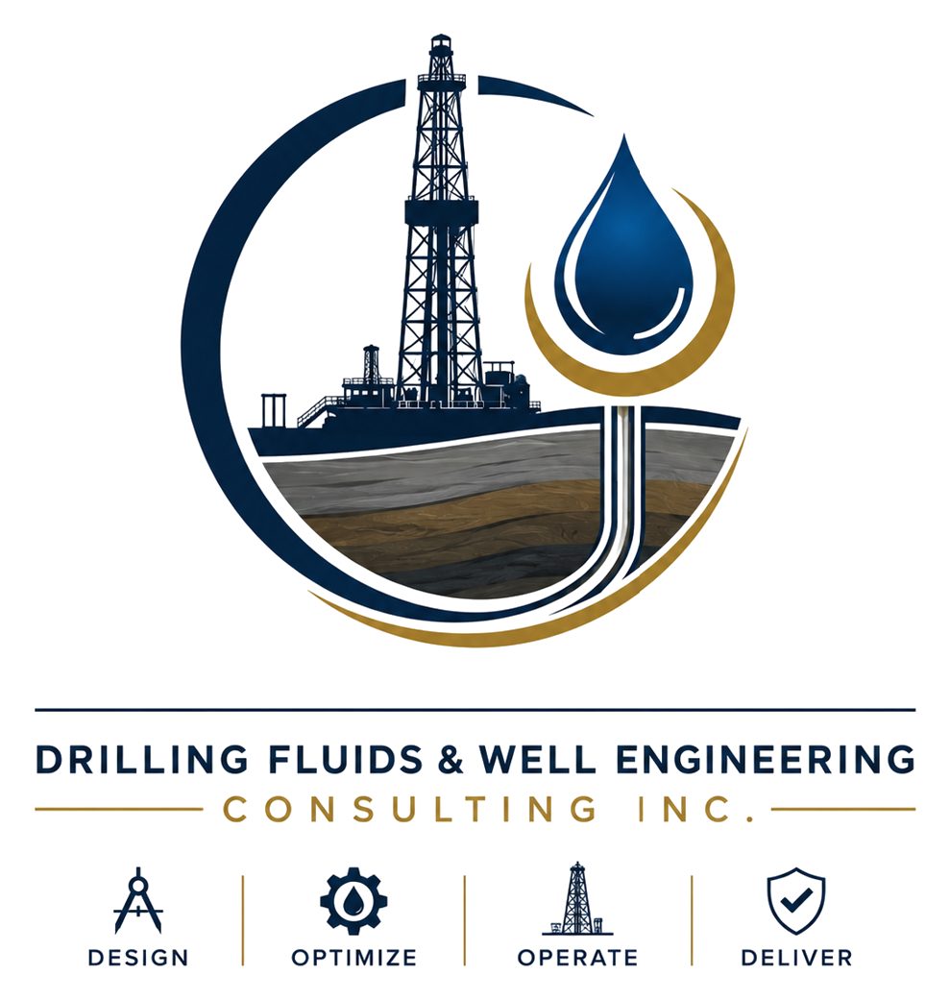

Drilling Fluids Engineering & Optimization
Mud program execution, fluid property control, field testing, chemical treatments, cost optimization and operational recommendations.

Strata DrillingOil & Gas ProfessionalDrilling Fluids • Wellbore Stability • Field Service Engineering
Strata Drilling is an Oil & Gas Professional based in Edmonton, Alberta, with 20+ years of experience supporting upstream projects, drilling fluids operations, wellbore stability, field service engineering, laboratory testing, real-time data acquisition and technical advisory across Canada, Argentina and Colombia.
What the company does today
Drilling Fluids & Well Engineering Consulting supports operators, service companies and project teams with practical engineering and field-based decision support for conventional and unconventional oil and gas operations.
Drilling fluids engineering, wellbore stability, field service engineering, solids control, laboratory testing, real-time operational support and drilling project execution.
Experience includes shale gas in Argentinian Patagonia, Duvernay horizontal wells in Alberta and micro-tunneling support for the Trans Mountain Expansion Project in Canada.
Technical Services
Mud program execution, fluid property control, field testing, chemical treatments, cost optimization and operational recommendations.
Operational support for directional and horizontal drilling environments, including real-time data awareness, survey coordination and field-based decision support.
Support for losses, instability risks, hole cleaning, stuck pipe tendencies, swelling formations and corrective action plans.
Support for solids control, shaker performance, dilution control, waste minimization, fluid conditioning and overall fluid lifecycle management.
Hands-on field representation, daily reporting, crew coordination, contractor alignment and safe technical execution at the wellsite.
Testing, inspection, quality control, fluids analysis and data collection to support operational and engineering decisions.
Pre-planning, job execution, post-job analysis, feasibility studies and decision support for drilling and completion fluids projects.
Mentoring and practical education for crews and junior engineers on mud systems, field testing, reporting and safety discipline.
Trend analysis, real-time data review, drilling performance interpretation and decision support for operational improvement.
Strategic support connecting drilling, fluids, HSE, logistics, cost control and field execution.
Real field context


How the work is delivered
Review well objectives, formation risks, fluids requirements, equipment, environmental sensitivity and operational constraints.
Support field teams during drilling, fluids testing, solids control, real-time operational follow-up, reporting and contractor coordination.
Use real-time operations, laboratory data, field observations and trend analysis to support decisions and reduce operating cost.
Deliver post-job analysis, lessons learned, feasibility input and recommendations for the next section or project.
Safety • Technical discipline • Compliance
Strata Drilling’ background includes recognition for Best Team HSE and work in environmentally sensitive energy infrastructure projects. The site positions his services around safe execution, documentation, testing, traceability and technical discipline.
Professional background
20+ years in oil and gas operations with country-specific experience in drilling fluids, field service engineering, wellbore stability, mud systems, solids control, field coordination and upstream project execution.
Select a country to review the operational experience behind Strata Drilling’s technical profile.
In Canada, I applied my drilling fluids, field service and real-time operations background to demanding Western Canadian operations, including SAGD wells, oil sands / bitumen environments, gas wells, long horizontal wells and field execution support.
From 2014 to 2018, I worked in Argentina with Halliburton, gaining high-value exposure to unconventional reservoirs and technically demanding drilling programs in one of the world’s most important shale development regions.
Colombia was the starting point of my oil and gas career. Beginning around 2006, I built a strong foundation in drilling fluids, mature field operations, reservoir protection and field leadership with companies including Halliburton, Weatherford, Ismocol and Superior Energy Services.
Education & Recognition
Bachelor of Science (B.Sc.) — Petroleum Engineer.
Drilling Fluids Engineer — Drilling Fluids certification program.
MVP Award and Best Team HSE.
Eligible to APEGA membership. Certified and recognized as Drilling Fluids Engineer and MWD Operator.
Available for projects
Contact Strata Drilling directly for project inquiries, technical support, consulting assignments or field execution support.